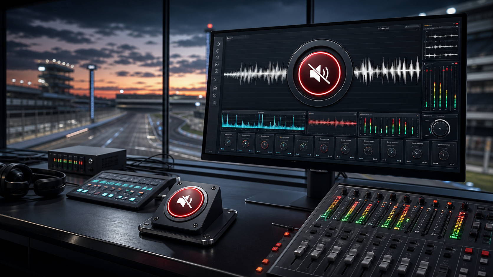

"The stakes have never been higher"
Auto-ducks for 8.4 seconds or until the leader pits.

Satirical race-day audio control
Real-time IndyCar commentary suppression for the exact moment the stakes have never been higher, the tension is palpable, and your living room just needs ten blessed seconds of engine noise.
Mute Will Buxton is software with one sacred mission: preserve the sounds of IndyCar while gently ducking the broadcast's most operatic flourishes. It is unfair, unnecessary, and somehow exactly what the second screen economy has been building toward.
Auto-ducks for 8.4 seconds or until the leader pits.
Soft mute with a tasteful tire squeal crossfade.
Warns nearby viewers before the next championship permutation.
Reduces metaphor density while preserving genuine race data.
Tune the detection model, arm the mute gate, and watch the broadcast transcript become a calmer place to spend a Sunday.
Lap 41: The stakes have never been higher.
Lap 42: This changes everything for the championship.
Lap 43: The margins are so fine at this level.
Runs alongside your stream and analyzes commentary cadence in real time.
Flags phrase clusters like "palpable tension" before they bloom.
Applies a polite mute curve, leaving crowd, cars, and chaos intact.
Returns commentary once the jeopardy index drops below unbearable.
"For the first time in years, I heard the tires. I did not know they still made noise."
"It took the phrase 'everything to play for' and gave me something to live for."
$0
Manual mute reminders and one complimentary eye roll.
Start quietly$7
Automatic catchphrase ducking, jeopardy scoring, and pit-stop calm.
Most merciful$23
Maximum stakes protection with ceremonial silence for restarts.
Arm everythingNot yet. This is a parody website for a fictional product, which is legally distinct from a cry for help.
No. In our architecture, the cars, radios, crowd, and useful commentary survive. Only excessive narrative weather systems get ducked.
No. It is a fan-made satirical concept and is not endorsed by, sponsored by, or affiliated with any person, series, team, or network.
Coming eventually, allegedly